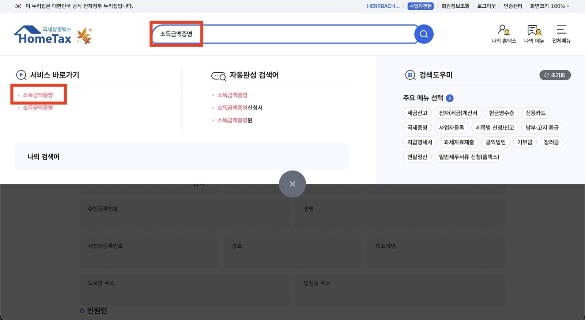
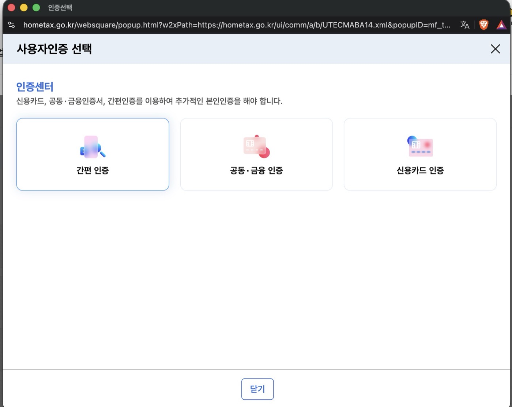
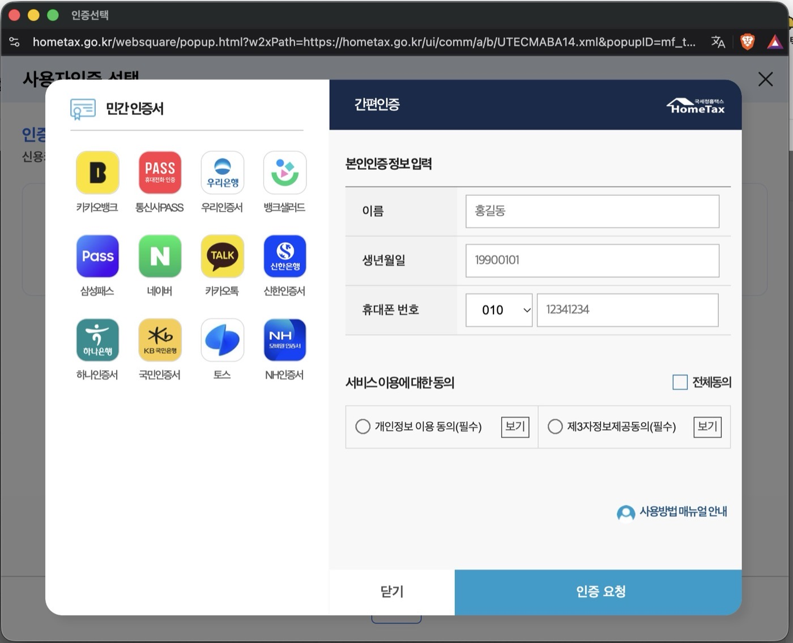
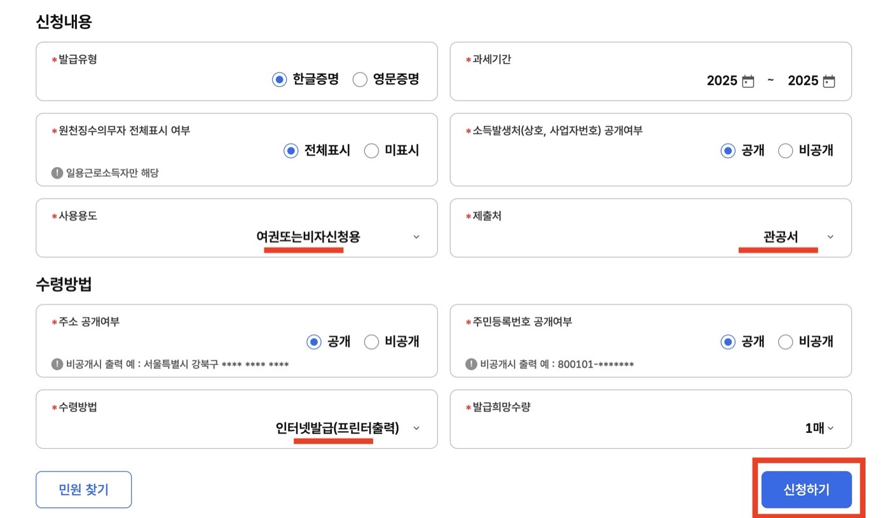
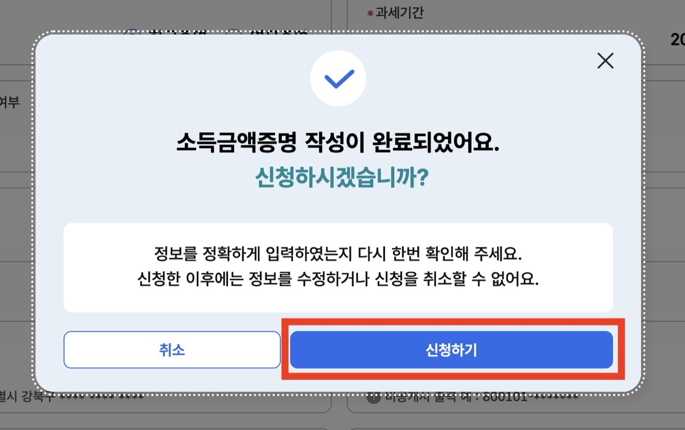
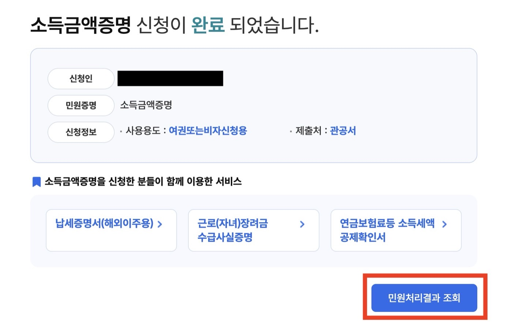
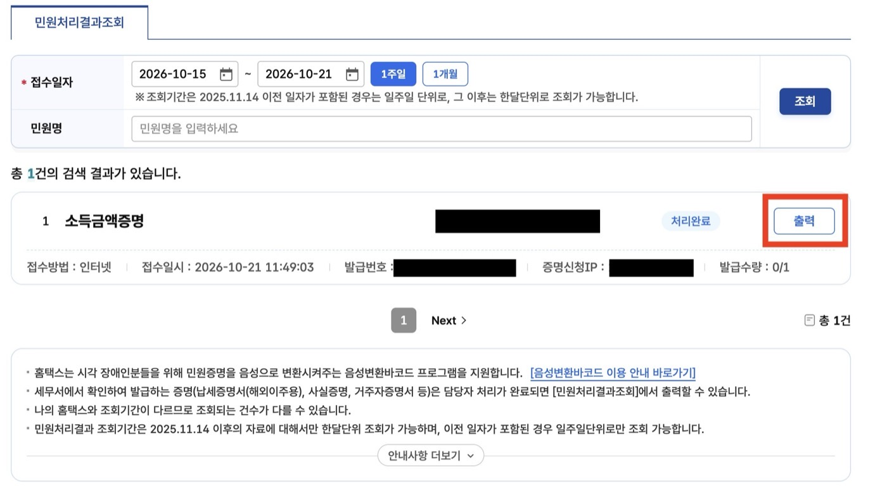
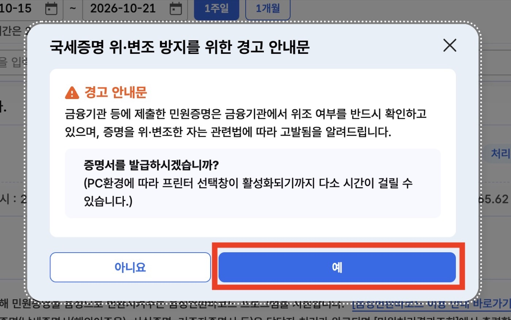

How to get your 소득금액증명 from Hometax
The 소득금액증명 is the National Tax Service certificate of your taxable income for a given year. Immigration uses it for the F-2-7 points, banks use it for loans, and landlords sometimes ask for it. It is free, instant, and the Hometax screens for it are Korean-only. This is the walkthrough.
When last year's income shows up
This trips up more applications than any document. The certificate for a given year only exists once the tax office has processed that year:
| Your income type | Last year's certificate available from |
|---|---|
| Salary, year-end settlement done by your employer (연말정산) | 1 May |
| Freelance or business income, filed in the May 종합소득세 return | 1 July |
Apply for the F-2-7 in March and the newest certificate you can get is for the year before last. If your income went up, wait for May or July.
Option 1: Hometax on a computer
You need a Hometax account and one of the verified login methods: 간편인증 (Kakao, Naver, PASS, Toss or your bank app), a 공동인증서, a 금융인증서 or a Korean credit card in your name. Foreigners authenticate with the 외국인등록번호 on the ARC and a Korean phone number in their own name.
Go to hometax.go.kr and log in. ID and password is enough for this step.
Type 소득금액증명 in the search box at the top of the page. Under 서비스 바로가기 on the left, click the first 소득금액증명. Do not try the menus: on the 2025 layout the 민원증명 menu does not lead to the certificate at all.

A popup titled 사용자인증 선택 appears. Certificates need a verified login on top of the password one. Pick 간편 인증, choose your app, enter your name as it appears on the ARC, date of birth and phone number, tick both consents, press 인증 요청, and approve the request in the app. 신용카드 인증 works too if you have a Korean credit card.


The page is titled 소득금액증명신청서. The top block, 기본 인적 사항, is prefilled from your ARC: check the name and phone number. The block that matters is 신청내용:
- 발급유형: 한글증명 for immigration. 영문증명 exists and is handy for a foreign bank or embassy, but file the Korean one.
- 과세기간: from and to, in years. Last year to last year. You can ask for several years in one certificate if the office wants history.
- 원천징수의무자 전체표시 여부: only applies to daily-wage workers. Leave it.
- 소득발생처(상호, 사업자번호) 공개여부: 공개. This prints your employer's name and registration number, which the officer matches against your contract.
- 사용용도: the purpose. Pick 여권 또는 비자 신청용, passport or visa application. The list also has 대출용 for loans and 금융기관제출용 for banks.
- 제출처: where it goes. 관공서, government office.
- 주소 공개여부 and 주민등록번호 공개여부: 공개 for both. 공개 means shown in full, 비공개 means masked with asterisks, and immigration sends masked certificates back.
- 수령방법: 인터넷발급(프린터출력), which gives a printable PDF. 인터넷열람(화면조회) is view-only and 전자문서지갑 sends it to a government e-wallet app the officer will not open.
- 발급희망수량: 1. It is a PDF, print as many as you like.

The notice at the top of the form is also where Hometax states the availability dates: last year's certificate for salaried people from 1 May, for 종합소득세 filers from 1 July.
Click 신청하기 at the bottom. A popup reminds you that a request cannot be edited or cancelled once sent. Confirm. A wrong certificate costs nothing; you simply request another.

The completion page shows your request summary and a button, 민원처리결과 조회. Click it. The same list is always reachable under 민원증명 → 민원신청 처리결과 조회.

The results table lists your request within seconds, status 처리완료, with the 발급번호 the officer can verify online and a counter 발급수량 0/1. Click 출력 at the end of the row. A warning modal explains that forging a tax certificate is a crime and asks whether to issue it; press 예. A printer dialog opens after a few seconds. The counter is the number of prints you are allowed from this request, so choose save as PDF in that dialog, then print paper copies from the PDF. If the dialog does not appear or you close it, request the certificate again from the search box; it is free and instant.


Option 2: Hometax on your phone (손택스)
Same login, same menus, same certificate. Install 손택스 from the app store, log in with 간편인증, go to 증명발급 → 소득금액증명. The PDF lands in the app's 발급내역. Mail it to yourself and print.
Option 3: the kiosk
Any 무인민원발급기, the grey kiosk in 주민센터, district offices, big subway stations and some hospitals. Choose 세무 → 소득금액증명, scan your fingerprint, enter the ARC number, pay nothing. It prints on the spot. The kiosk is the fastest option if you do not have a Korean login set up.
Option 4: the tax office counter
Any 세무서, counter 민원봉사실, with your ARC. Five minutes, no appointment. Useful if the kiosk or Hometax refuses your ARC number, which happens after a change of ARC number or a recent address change.
Common errors
- "조회된 내역이 없습니다" (no record): the year is not processed yet, see the table above, or you picked the wrong 소득종류. Try 종합소득.
- Login fails on 간편인증: your bank or Kakao certificate is registered under a different name spelling than the ARC. Use the kiosk.
- The figure is lower than you expected: that is 소득금액, not gross. Nothing is wrong. Plan your points around it.
- Two employers in one year: the certificate sums them, provided both did their 연말정산 or you filed in May.
For the F-2-7 file
Print the certificate for the most recent processed year, keep the PDF, and put it right behind the income line of your 점수계산표. Bring the 근로소득 원천징수영수증 from your employer as well: the officer cross-checks the two.